一、前言
为了系统掌握大语言模型提示词的创作与调优，首先必须掌握一些基础知识。这包括大语言模型、提示词、提示词模板、提示词工程、模型微调、RAG 的概念和关系。此外，我们应认识到，并非所有问题都能通过提示词工程来解决，了解还有哪些常见的其他手段。掌握这些知识将为后续系统学习提示词创作与调优技巧奠定坚实基础。
二、常见概念
-
大语言模型
在介绍提示词的概念之前，有必要先了解大语言模型（Large Language Model，简称 LLM）这个概念。
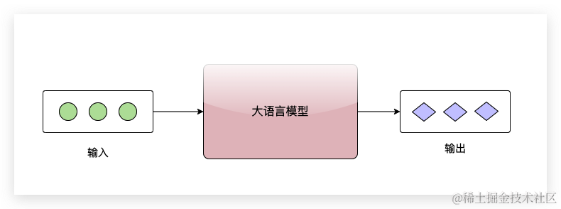
大语言模型是一种先进的计算机程序，通过海量数据训练，掌握了大量知识，能够理解和生成自然语言，擅长处理文字信息，并能执行问题回答、语言翻译、文章生成等任务。我们可以将问题输入给大语言模型，大语言模型返回给我们结果。你可以将其理解为一个特别聪明的朋友，他读过大量书籍，记忆力极好，并且能够回答各种问题。
大语言模型也存在一些局限性：
- 性能问题。当前大模型响应的速度相对较慢，这是由于模型的复杂性和所需的计算资源较高。大语言模型通常包含数十亿到数千亿个参数，这些参数需要大量的计算资源来处理和生成响应。同时，模型的推理过程需要访问大量的训练数据和进行复杂的计算，这也会导致响应时间增加。此外，硬件限制和并行计算能力的不足也会影响大模型的运行效率。
- 时效性问题。大语言模型的训练数据是静态的，通常来自于某个特定时间点之前的内容，因此模型在训练后无法获取新的信息或更新事件。即使通过提示词提供新信息，大模型也无法自动验证或更新这些信息的准确性和时效性。
- 上下文丢失问题。大语言模型在处理超长文本时会受到 token 长度限制，通常这些限制是由模型的架构和硬件资源决定的。当输入文本超过这个限制时，模型需要截断或简化部分内容，从而导致先前上下文信息的丢失。这种信息丢失会影响模型对后续内容的理解和生成。
- 幻觉问题。大语言模型在生成内容时依赖于训练数据中的模式和关联，但它并没有真实的理解或常识。因此，模型有时会基于不完整或错误的信息生成看似合理但实际上虚假的答案。这种现象被称为“幻觉”，它是模型推理过程中的一个固有问题。
- 精确字数问题。大语言模型生成文本时是基于概率的，模型试图生成在给定上下文中最有可能的词汇序列。这种生成机制并不能保证精确的字数控制，因为模型主要关注内容的连贯性和流畅性，而不是严格的字数限制。
- 内容合规问题。为了确保生成内容的安全性和合规性，大语言模型通常会嵌入一些规则和限制，以避免生成违法、违规或不适当的内容。这些规则通常由模型的开发者设定，并基于法律法规和道德标准。这会导致模型在某些情况下拒绝回答特定问题或生成特定内容。
当然，现在也有方法可以一定程度上解决上述问题，也相信随着技术的不断发展，上面大的多数问题终将被解决。
普通用户可以通过大语言模型的平台界面直接使用大模型；开发者则可以通过调用大语言模型平台提供的 API。普通用户和开发者都可以使用 AI 应用平台搭建应用来满足自己的工作、生活和学习需求，创造商业价值。
目前，国外的常见大语言模型平台有： ChatGPT（OpenAI）、Claude（Anthropic）、Bard（Google）和 Bing Chat（Microsoft）。国内常见平台有：通义千问（阿里）、Kimi（月之暗面）、文心一言（百度）、天工 AI（昆仑万维）、智谱清言（智谱 AI）等。国外常见的 AI 应用平台包括：Poe 、Coze。国内有：扣子 。大家编写的提示词都可以在这些平台上使用。
-
提示词和提示词模板傻傻分不清
什么是提示词
提示词（Prompts） 是与大型语言模型（如通义千问、GPT-4）互动时输入的一段文字或问题。这段文字或问题引导模型生成相应的回答或内容。
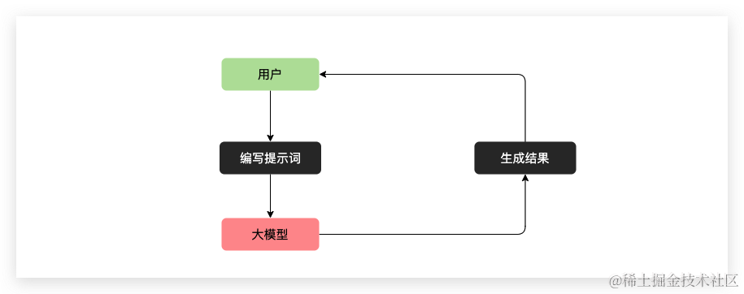
通俗来讲，如果你需要将一个任务交给另外一个人，你就需要把任务给对方说清楚。同样地，我们想让大语言模型帮我们完成任务，也需要将问题描述给大语言模型，描述的文本可能包括任务的目标、任务所需的背景知识、处理的过程、输出的样例等，这段描述的文本就被称为提示词。
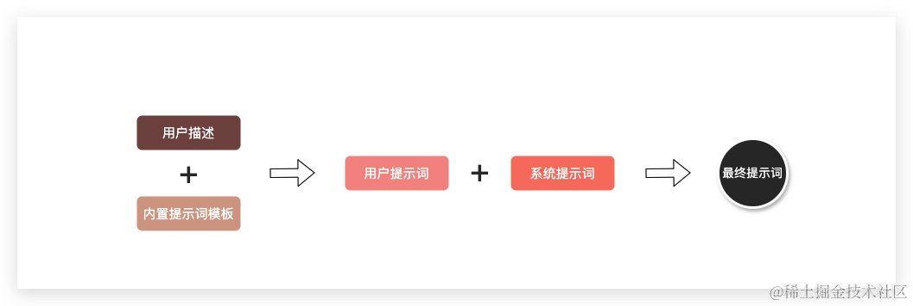
提示词可以分为系统提示词和用户提示词。系统提示词是预先设定的，用于指导大语言模型的总体行为和风格，设定模型在整个对话过程中的基本准则，通常用户无法修改。用户提示词则是用户在实际对话过程中输入的具体问题或请求，可能是用户直接输入，也可能是将用户输入和选择的信息作为变量通过提示词模板渲染而得到。
本小册所讨论的提示词技巧主要针对用户提示词。
值得一提的是，由于不同的模型的理解能力和推理能力等有差异，相同的提示词产出的结果质量也会有所不同。
提示词是用户和大语言模型沟通的桥梁，是关于提问的艺术。在当前阶段，提示词主要承担两项职责：首先，它们需要清楚地向大模型传达任务要求；其次，当模型未能正确完成任务时，提示词还需要指导模型如何改进。
什么是提示词模板？
提示词模板是一种结构化的格式，用来帮助你更方便地维护提示词。它就像是一个空的框架，你可以根据需要往里面填充不同的内容。
大家可以通过下面的示例更好地理解提示词和提示词模板的区别。
提示词示例：
写一篇关于人工智能的文章，包括人工智能的概念、人工智能的应用场景和人工智能的利弊。
提示词模板示例：
写一篇关于[主题]的文章，包括[要点1]、[要点2]和[要点3]。
我们通常所说的提示词调优主要指的是对提示词模板的调优。
-
提示词工程、模型微调和 RAG 傻傻分不清
什么是提示词工程？
提示词工程（Prompt Engineering）是在使用大语言模型时，通过精心设计输入（提示词）来引导模型输出所需结果的方法。这种方法无需修改模型本身，而是通过优化输入以获得更优质的输出。
如果将大语言模型比作一个人，那么提示词工程则是让模型更好地理解并满足用户需求的交流技巧。通过这种对话方式，用户能够更精准地传达期望，从而使模型生成更符合预期的内容。
提示词工程结合了创造力、对模型能力的深入理解以及战略性的结构安排，从而有效引导人工智能提供准确、相关且有用的响应。通过提示词工程，人机之间的沟通得以显著改善，确保互动的高效性和准确性。
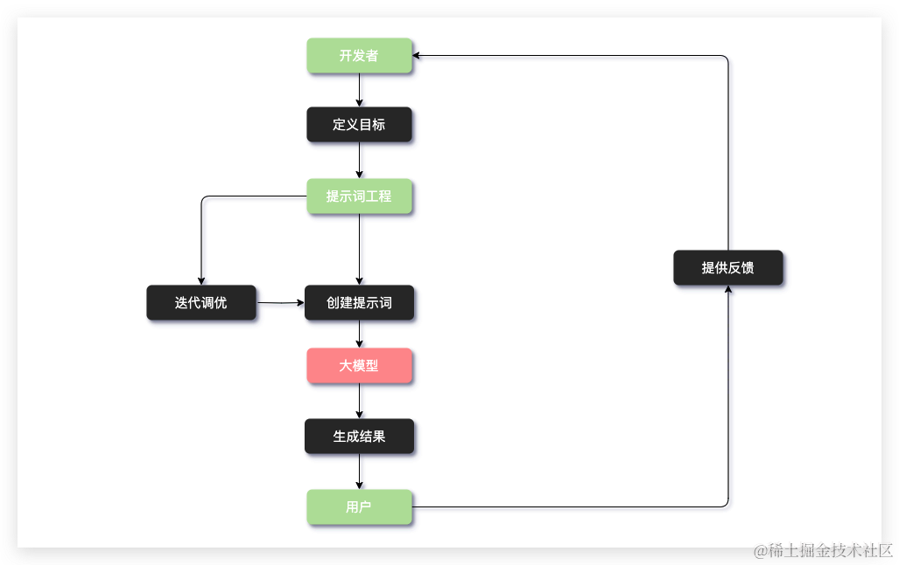
本小册中讲的提示词工程主要包括提示词的创作和调优。开发人员通常需要先定义任务目标，通过提示词工程创建提示词，并调用大语言模型生成结果，用户可以对结果进行反馈，开发者根据反馈持续迭代调优提示词，最终得到符合目标的提示词版本。至于如何判断提示词符合目标，我们将在后续的提示词效果评估章节中详细讲述。
在 AI 时代，“人人都是 AI 应用开发者” ，任何人都可以通过提示词创建应用。我们既是开发者也是用户，在使用过程中发现问题时，可以利用提示词工程的技巧进行调优，最终实现需求。
提示词工程非常重要。 如果不懂提示词的创作和调优的最佳实践，很难快速写出满足自己需求的提示词，遇到各种 Bad Case 无法快速找到解决思路，甚至通过提示词进行业务调研时，匆匆下了实现不了的结论。而精心设计的提示词能够清楚地传达用户的意图，可以降低大模型对用户意图的误解，可以提高答案的准确度，从而可以更好地满足需求，创造更大的商业价值。
什么是模型微调？
模型微调（Model Fine-tuning）是指在原有的预训练模型基础上，使用特定领域的少量数据进行再训练，以便模型在这个特定领域的任务上表现更好。微调后的模型可以更好地理解和处理特定领域的任务，因为它在这些任务上接受了更多的训练。
如你们公司自己定义了一种特殊语法的脚本，包含各种操作符，且语法和操作符数量众多。你希望利用大语言模型进行代码补全，但发现通过提示词无论如何调优，模型表现仍然不理想。即使尝试了更高级的模型或专门的代码类模型，效果依然欠佳。此时，可以将相关的语法手册、大量历史脚本以及代码补全任务所需的数据集对模型进行微调，可以显著提升其效果。
通过模型微调，模型可以具备或增强特定能力，提升任务完成的准确性和效率，从而更好地满足特定领域的需求，带来更大的商业价值。
什么是 RAG 技术
RAG 技术是一种结合信息检索与文本生成的技术。RAG 技术结合了信息检索（Retrieval）和生成（Generation）两部分。
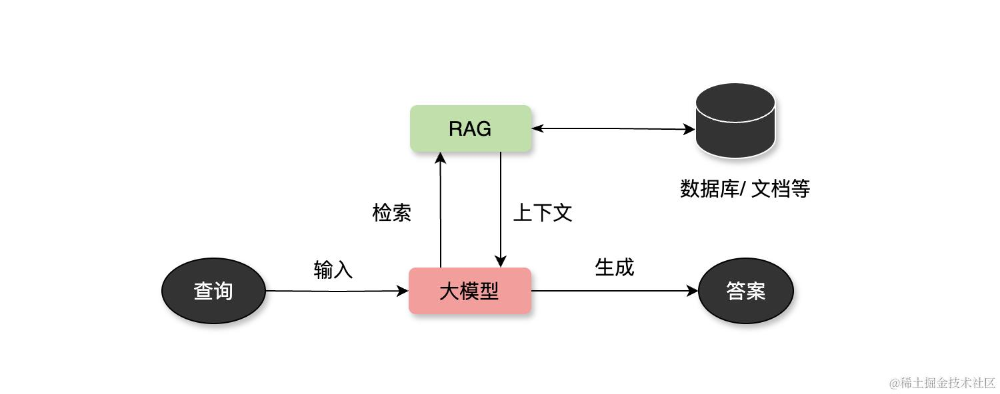
首先，它会在一个庞大的数据库中检索与问题相关的信息，可以作为提示词的构成部分，然后再用大语言模型生成最终的回答。这种方法的优势在于，生成的回答既有大语言模型的语言能力，又能包含最新的、上下文相关的具体信息。
比如我们需要让大语言模型生成某款智能手表的评论，但是大模型训练时没有该手表的信息。实践中，可以通过 RAG 技术动态检索出该手表的相关特点，构造到提示词中，然后再调用模型进行回答，效果往往更好。
提示词工程 VS 模型微调 VS RAG
提示词工程、模型微调和 RAG 各有优缺点。
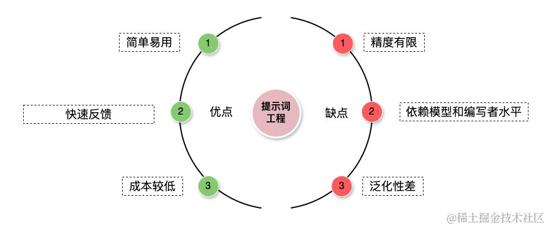
提示词工程的优点：
-
简单易用：通过调整输入内容，可以快速找到最佳的提示词组合。
-
快速反馈：无需对模型本身进行修改，能够即时看到调整效果。
-
低成较本：无需高额计算资源或数据集，适合资源有限的情况。迁移到其他模型的成本也很低，不需要额外的训练。
提示词工程的缺点：
-
精度有限：对于复杂或专业领域，提示词的效果可能不够理想。
-
依赖模型和编写者水平：模型能力和编写者的水平决定了提示词工程效果的上限。
-
泛用性差：对于高度专业化的任务，难以满足需求。
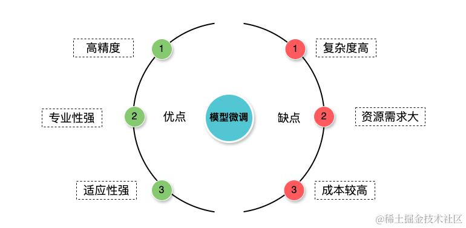
模型微调的优点：
-
高精度：通过在特定领域的数据上进行微调，模型能提供更准确和专业的回答。
-
专业性强：适用于医学诊断、法律咨询和代码生成等需要高专业度的场景。
-
适应性强：模型微调可以更好地适应用户的特定需求和偏好，使其回答更加贴近实际使用场景。
模型微调的缺点：
-
复杂性高：过程较为复杂，需要一定的技术能力和时间。
-
资源需求大：需要大量计算资源和高质量的数据集。
-
成本较高：从数据收集到模型训练，成本较提示词工程更高。想要更换新模型，需要基于新模型重新微调。
简单来讲，如果模型本身的能力能够满足需求，那么可以通过提示词调优来逼近其能力极限，发挥更好的效果；如果模型本身不具备该能力或在特定领域表现较差，即便更强大的模型或更垂直的模型也无法满足要求，需要更高专业度和精确性，则需要考虑模型微调。
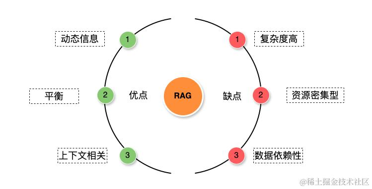
RAG 的优点：
- 动态信息： 通过利用外部数据源，RAG 可提供最新且高度相关的信息。
- 平衡： 在提示的易用性与微调的定制性之间提供折中方案。
- 上下文相关性： 通过附加上下文信息增强模型的响应，生成更为详尽和丰富的输出。
RAG 的缺点：
- 复杂性：实施 RAG 可能较复杂，需将语言模型与检索系统集成。
- 资源密集：虽然比全面微调资源消耗少，但 RAG 仍然需要相当多的算力。
- 数据依赖性：输出质量取决于检索信息的相关性和准确性。
提示词工程、模型微调和 RAG 三者在 AI 模型应用中的不同优势及交互关系。
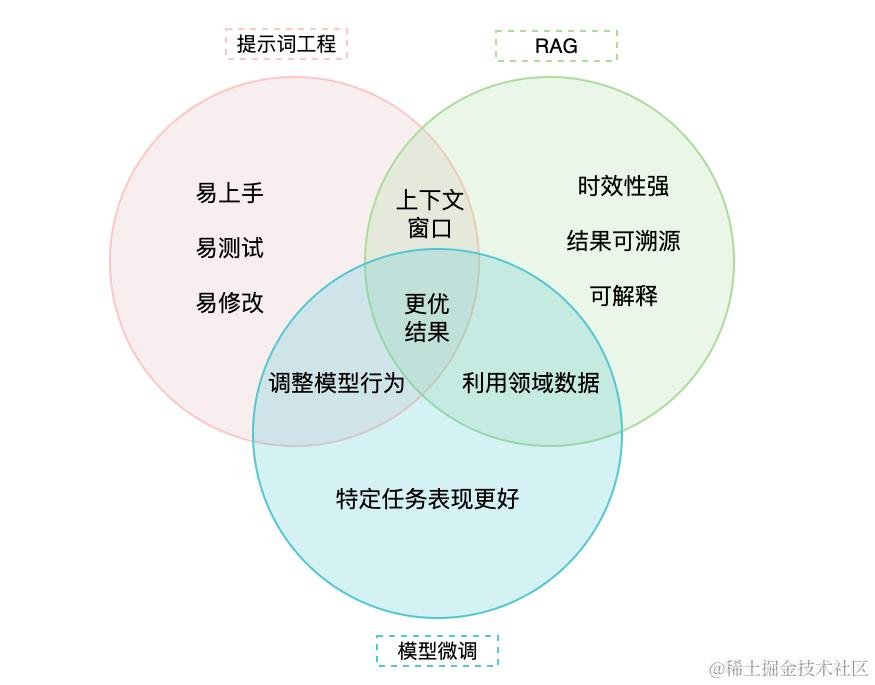
提示词工程强调易上手、快速调整模型输出；RAG 注重实时更新、数据溯源和解释性；模型微调则专注于特定领域的专业性。它们的结合能通过优化上下文、使用领域数据和调整模型行为，可以达到生成更好的效果。
三、提示词工程不是万能的
在真正开始学习提示词的技巧和经验之前，我们需要认识到提示词工程不是万能的。并不是所有大模型表现不佳的问题都可以通过提示词调优来解决。
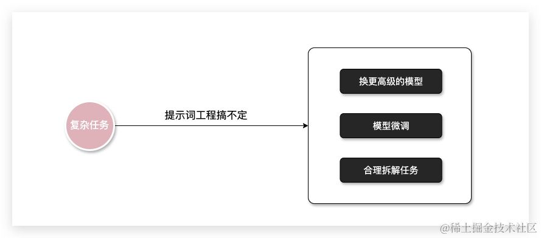
提示词调优的目的是接近当前模型的能力上限。如果当前模型的能力不足以完成提示词所描述的任务，那么无论如何调优，都很难获得满意的效果。此时，通常需要考虑使用更高级的模型、对模型进行微调，或者对任务进行合理拆分，将其分解为模型能够完成的简单任务。
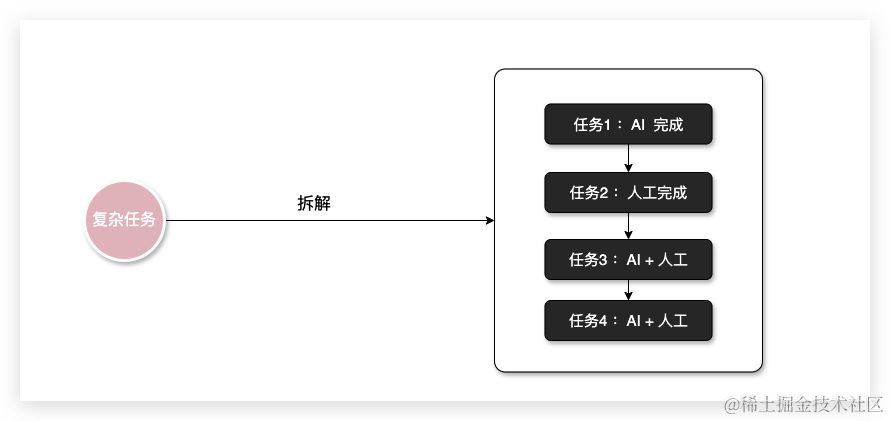
在进行提示词调优之前，我们需要审视任务的拆分是否合理，并确定哪些任务适合由 AI 完成，哪些适合人类完成，以及哪些适合 AI 与人类协作完成。
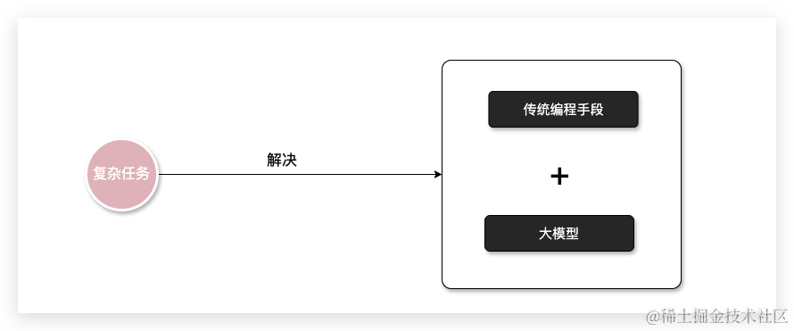
有时我们还需要结合传统的编程手段，比如有些任务采用传统编程方式可以实现 100% 的准确率而且速度更快，如对用户表单中日期格式的校验，就应该用传统的编码方式；此外，AI 生成的内容可能存在缺陷，例如生成的代码可能没有闭合，这时可以通过传统的编码方式进行补全。
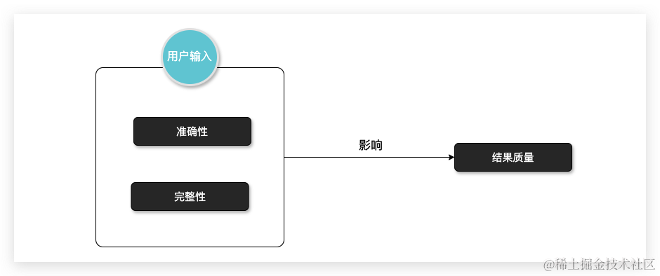
此外，有时即使提示词设计得非常合理，如果用户输入的信息不准确或不完整，模型也很难给出令人满意的答案。此时，需要对用户输入进行预检查，确保输入信息的准确性和完整性。
四、总结
本文主要介绍了在提示词创作和调优前必须了解的知识，包括大语言模型、提示词、提示词模板、提示词工程以及模型微调：
-
提示词是我们提供给大模型的输入。
-
提示词模板是提示词的骨架。
-
提示词工程是提示词创作和调优的技巧，简单易用，但定制性有限。
-
模型微调是为了增强和拓展模型在特定领域的能力，但成本和复杂性较高。
-
RAG 技术则是通过结合外部数据源，提供最新、相关的信息，是一种在提示工程与微调之间的折中方案，特别适合需要动态信息和上下文相关性的场景。
同时，也指出提示词工程不是万能的：
-
提示词工程通过不断优化提示词来达到大语言模型的能力上限。
-
如果达到能力上限后仍无法满足要求，需要考虑使用更高级的模型或更垂直的模型、重新拆分任务、检查用户输入信息的准确性和完整性，或辅之以传统的编程手段等。
在这一讲的学习过程中，如果你遇到什么问题或者有好的经验要分享，欢迎你在留言区与我分享，我们一起交流，一起进步。
COMMUNITY NOTES
读者评论
这篇文章暂时没有读者留言。